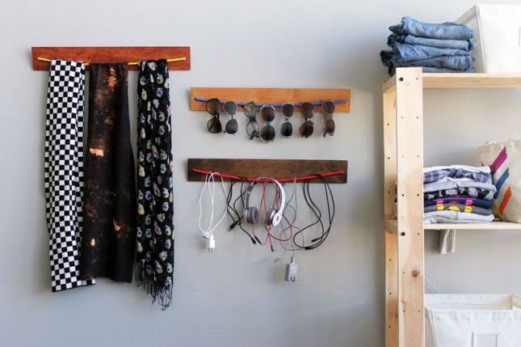
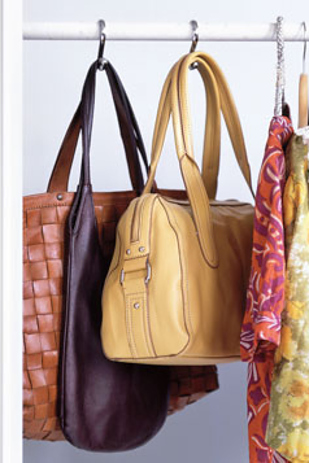
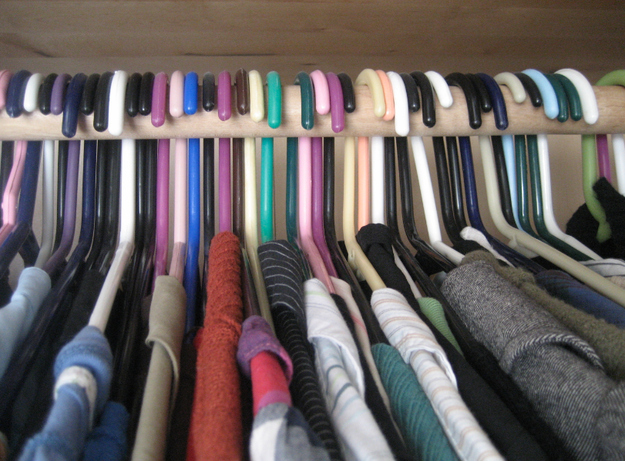
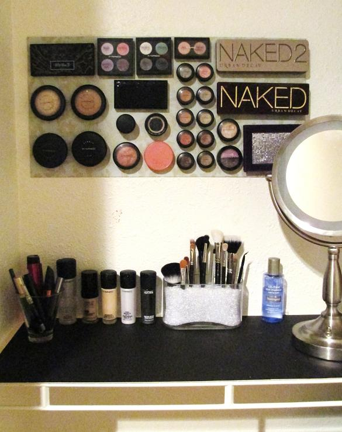
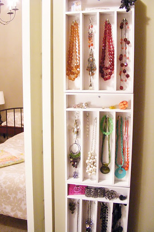
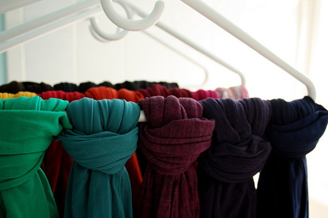
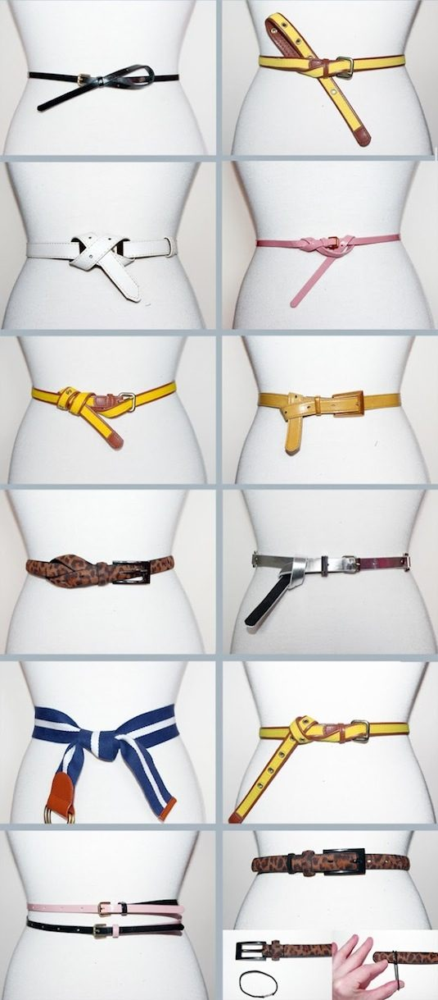

8 Life Hacks For Girls Part 3
These exist because, well, sometimes it's really hard being a girl. Besides, guys can use some of these, too. Winning. These exist because, well, sometimes it's really hard being a girl. Besides, guys can use some of these, too. Winning.
1. Show Curtain Hooks For Closet Organization

2.Hang Clothes Backwards To Clean Out Your Closet
Ever wonder what clothes you never wear? This is a great tactic. Start by hanging all your clothes backward. Once you've worn the piece of clothing, hang it normally. If by some certain amount of time some hangers are still backwards then you should probably get rid of them. It'll clean up your closet and make way for newer clothing. Win-win, right?
3.Bungee Cord = Master Organizational Tool
4.Magnetic Board For Makeup Organization

5.Cutlery Trays = Jewelry Storage

6.Coat Hangers For Scarves, Stockings, And More

7.Cutlery Trays = Jewelry Storage
8.Wear A Belt In A Bunch Of Different Ways
